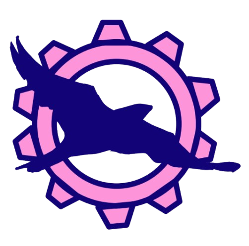

The Nighthawks
FTC Team #11943
Empowering gender minorities through innovation and robotics
About the Team
We are a gender minority team from the Nightingale-Bamford School.
Our team is committed group of engineers, coders, artists, and gamers formed in 2017 who bring diverse
perspectives to solve problems in creative ways.
Our Values
- Commitment: Excellence and gracious professionalism in and out of the Makerspace.
- Gender Equity: Promoting gender equity and serving as role models.
- Representation: Proud ambassadors of FIRST, fostering community and passion.
First Tech Challenge
First Tech Competition is a Robotics competition in which middle and highschoolers design, build and operate robots in head to head challenges. This year, the challenge is called "Into the deep". Teams have to score samples into baskets and specimens onto chambers.
Meet the team
Fiona
Role: Co-captain, Engineer, CAD
Grade: 11
Years on team: 3
Claire
Role: Co-captain, Programmer
Grade: 11
Years on team: 3
Shrujana
Role: Outreach
Grade: 12
Years on team: 4
Alisha
Role: Engineer
Grade: 12
Years on team: 3
Ash
Role: Outreach
Grade: 11
Years on team: 3
Sukhayna
Role: Engineer, CAD
Grade: 11
Years on team: 3
Annabel
Role: Engineer, CAD
Grade: 11
Years on team: 2
Summer
Role: Engineer, Outreach, CAD
Grade: 11
Years on team: 2
Alex
Role: Engineer, Outreach, CAD
Grade: 11
Years on team: 2
Elyssa
Role: Engineer
Grade: 11
Years on team: 2
Misha
Role: Engineer, Outreach
Grade: 9
Years on team: 1
Samara
Role: Engineer
Grade: 9
Years on team: 1
Mr. Sucre
Role: Mentor
Years on team: 1
Events
Going into the STEM industry as a woman can prove to be difficult.
Each year, we bring alumni from our school from various STEM fields to talk about their careers and give advice to aspiring students,
further opening more possibilities for young girls in the future.

Points
This year, during the autonomous and end-game periods, we are able to score 79 points.
Our team is capable of scoring 1 preloaded sample and 3 samples from the field in the high basket
before teleop. This gives us a 64 point auto.
During the teleop period, we plan on scoring samples in the high basket,
but we are also able to score in the low basket.
After the teleop period, we plan on reaching level 2 ascent.
This will give us 15 points during endgame.
Reach out to us
20 E 92nd St, New York, NY 10128
Email:
robotics@nightingale.orgInstagram:
@nighthawk_robotics